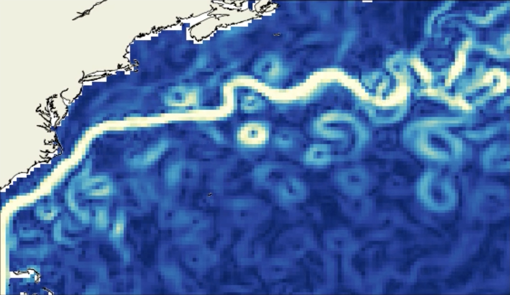

{kind=link}
The WOC data challenges are comparison platforms that allow a sound and fair assessment of the WOC products between them and to other products. These platforms offer an input dataset (altimetric data, drifters, SST data …) for anyone to create a surface current products as well as a reference dataset (independant from the input dataset) in order to evaluate the products. These data challenges are contained in a github repository and their documentation and results are presented on this readthedocs website.
Objectives and caveats#
The goal of the data challenge is to evaluate the products ability to estimate the total surface current in three different regions during the year 2019 (evaluation period). The input observations used to generate the products are not resticted apart for the AOML drifter data during the evaluation period: 2019. A dataset of some input observations is also provided (see Download the data), however any other data apart from the drifter data during the evaluation period can be used.
Note that some products are intrinsically estimating only specific components of the total current (e.g., the geostrophic component) they are nonetheless evaluated like the other products, making their assumption on the surface currents an approximation of the total current.
The caveats of the data challenge are:
Evaluated products#
Click on the products for more details.
Regions of interest#
The WOC data challenges cover three geographical regions, with different dynamical characteristics.

- Area: [14°E, 35°E, 45°S, 30°S]
- Dynamical specificities: Strongly geostrophic region.
- Independant evaluation data: CMEMS drifters currents and trajectories.
- Products:
- WOC BFN-QG
- WOC Global Inertial
- GlobCurrent Geostrophic
- GlobCurrent Total
▶️ Agulhas Current setup
▶️ Reconstruction movies
▶️ Product comparison

- Area: [80°W, 10°W, 25°N, 50°N]
- Dynamical specificities: High variability region with mixed geostrophic and ageostrophic dynamics.
- Independant evaluation data: CMEMS drifters currents and trajectories.
- Products:
- WOC Omega 3D
- WOC Global Inertial
- GlobCurrent Geostrophic
- GlobCurrent Total
▶️ Gulf Stream setup
▶️ Reconstruction movies
▶️ Overall comparison
- Area: [5°W, 25°E, 35°N, 47°N]
- Dynamical specificities: A quasi-closed basin with strong ageostrophic dynamics and vertical shear.
- Independant evaluation data: CMEMS drifters currents and trajectories.
- Products:
- WOC dADR-SR
- WOC Global Inertial
- GlobCurrent Geostrophic
- GlobCurrent Total
▶️ Mediterranean Sea setup
▶️ Reconstruction movies
▶️ Overall comparison
A word on the WOC project#
The World Ocean Circulation (WOC) consortium is composed partners from France, Norway, Italy, Spain, Netherlands. It gathers experts in the Earth Observation and ocean processes and sea state interactions.
The WOC project developed synergetic products optimizing the capacy offered by Earth Observations as well as in-situ and numerical models by focusing on four domains of applications:
Sea-state current interactions for Safe Navigation,
3D currents and vertical motion for Sustainable Fisheries,
Surface Lagrangian drift for a Clean Ocean,
High Resolution wave and current model assessment for a Productive Ocean and ocean processes and sea state interactions.
More data challenges#
If you are interested in more data challenges relating to oceanographic data (global altimetric mapping, SWOT preprocessing techniques …), you can visit the ocean-data-challenges website.